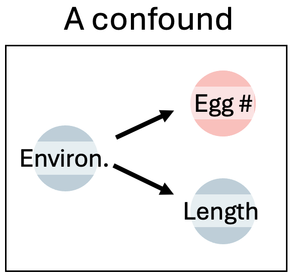
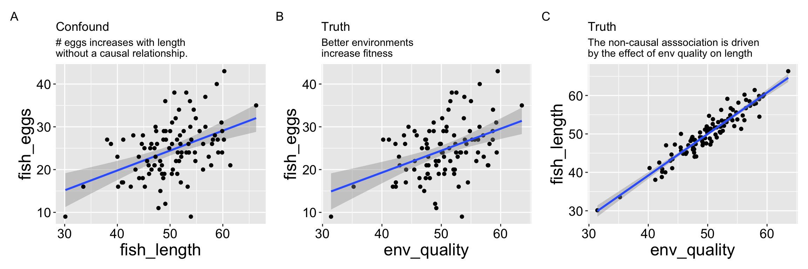
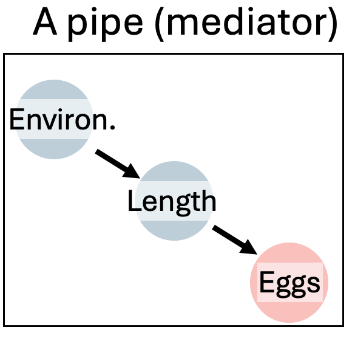
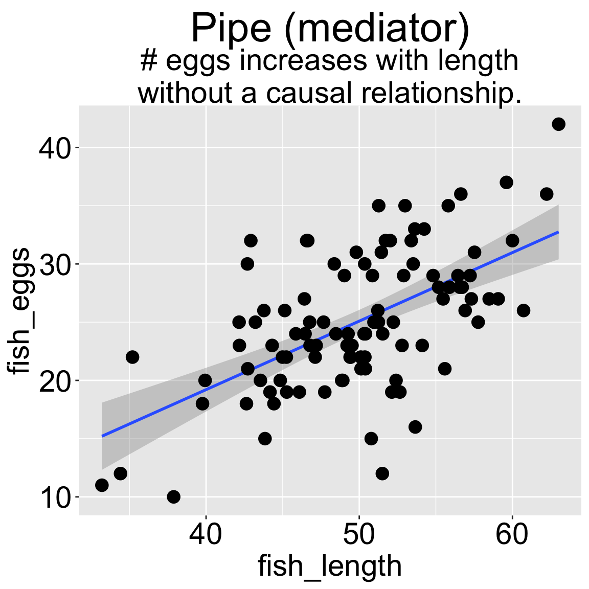
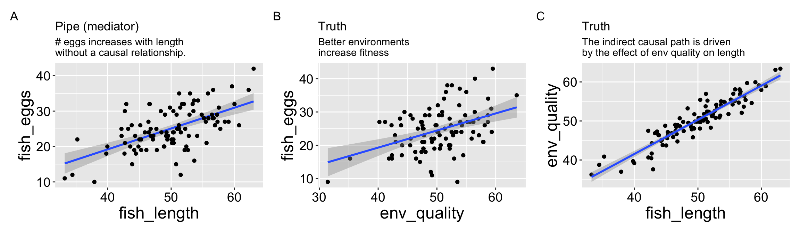
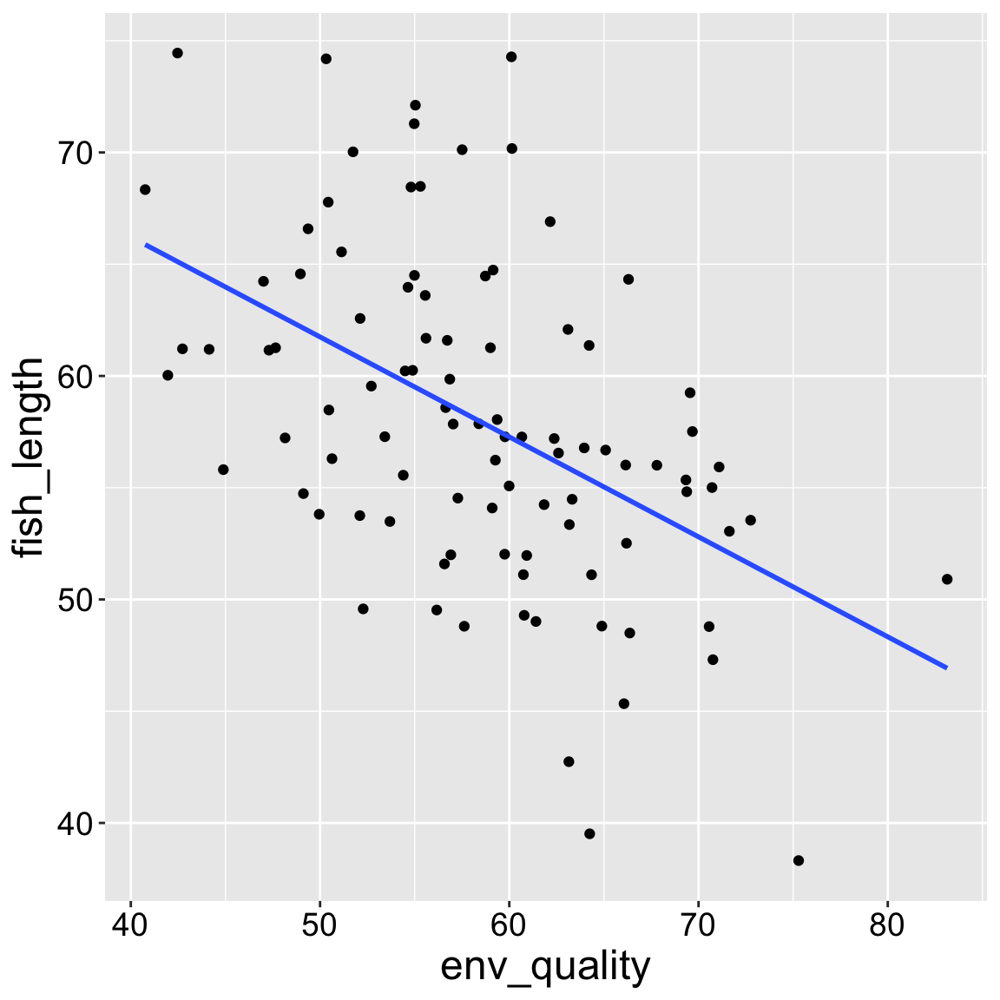

26. Cause
Motivating Scenario: We know “correlation does not necessarily imply causation”, and that experiments are our best way to learn about causes. But we also understand that there is some use in observation, and we want to know how we can evaluate causal claims in observational studies.
Learning Goals: By the end of this chapter, you should be able to:
What is a Cause?
Like much of statistics, understanding causation requires a healthy dose of imagination. Imagine (as we did in the Crash Course Statistics video laste chapter) a series of parallel worlds: in one, a specific treatment is applied (e.g., drinking coffee, receiving a vaccine, raising taxes), and in another, it is not. By observing how an outcome of interest responds in each world, we can start to see whether the treatment influences that outcome. We say that a treatment causes the outcome if changing it would alter the outcome, on average.
For quantitative treatments, we can envision multiple worlds where the treatment level varies by degree, observing how each variation impacts the outcome.
This concept of evaluating what would happen if we had changed a treatment is known as counter-factual thinking, and it is the foundation of reasoning about causation. In the previous chapter, we showed that experiments best approximate this “parallel world” model as individuals are randomly assigned to treatment or control group. In this chapter, we consider the best practices in inferring causation when we cannot do experiments.
When Correlation Is (Not) Good Enough
We don’t always need to know causation. We can build a multiple regression model and use it to predict outcomes without needing to know the underlying causes. For example, if I want to buy good corn, I can go to a farm stand that reliably sells tasty corn without needing to know if its quality comes from the soil, sunlight, or the farmers playing Taylor Swift each morning to “excite” the corn. Similarly, if I were selling insurance, I would only need to predict who is likely to develop lung cancer, not the underlying cause.
We need to understand causation when we want to intervene (or make causal claims). If I want to grow my own tasty corn, I’d need to know what specifically makes the farm’s corn delicious. No need to fertilize the soil if corn just need some T-Swizzle tunes. Similarly, I would need to know that smoking causes cancer to credibly recommend that people quit smoking to reduce their risk of lung cancer.
This chapter provides us with the tools to bring causal thinking into statistical analyses.
DAGs, confounds, and experiments
THE curious associations with lung cancer found in relation to smoking habits do not, in the minds of some of us, lend themselves easily to the simple conclusion that the products of combustion reaching the surface of the bronchus induce, though after a long interval, the development of a cancer. If, for example, it were possible to infer that smoking cigarettes is a cause of this disease, it would equally be possible to infer on exactly similar grounds that inhaling cigarette smoke was a practice of considerable prophylactic value in preventing the disease, for the practice of inhaling is rarer among patients with cancer of the lung than with others.
Such results suggest that an error has been made,of an old kind, in arguing from correlation to causation, and that the possibility should be explored that the different smoking classes, non-smokers, cigarette smokers, cigar smokers, pipe smokers, etc., have adopted their habits partly by reason of their personal temperaments and dispositions, and are not lightly to be assumed to be equivalent in their genotypic composition. Such differences in genetic make-up between these classes would naturally be associated with differences of disease incidence without the disease being causally connected with smoking. It would then seem not so paradoxical that the stronger fumes of pipes or cigars should be so much less associated with cancer than those of cigarettes, or that the practice of drawing cigarette smoke in bulk into the lung should have apparently a protective effect.
“Cancer and Smoking” Fisher (1958)
It is now well established that cigarette smoking causes cancer—but this wasn’t always the consensus. One of the most prominent statisticians in history, R.A. Fisher, famously argued that the observed relationship between smoking and cancer was spurious, insisting that smoking did not cause cancer. The extent to which his flawed logic was influenced by his own fondness for smoking, financial ties to the tobacco industry, or simple skepticism is unclear (Stolley (1991)). What is clear, however, is that Fisher raised a plausible argument (which was ultimately wquite wrong).
A cause is neither a guarantee nor the only pathway to an outcome. For example, many smokers have not developed lung cancer, and many non-smokers have (because there are multiple ways to develop lung cancer). We can interpret a cause as a thing that – if changed – increases the probability of some outcome.
Randomized Controlled Experiments
Randomized controlled experiments are our strongest tool for learning about causation. By randomly assigning individuals to treatments, we approximate the parallel worlds we imagined earlier – one in which a treatment is applied and one in which it is not. Differences in outcomes between these groups can be attributed to the treatment itself because, in expectation, all other variables are balanced by randomization.
For example, to test whether smoking causes lung cancer, we would randomly assign some people to smoke and others not to. Because genetics and environment would be randomly distributed, any systematic difference in cancer rates could be causally attributed to smoking. Since we cannot do this experiment, we rely on observational data and careful reasoning to identify causes.
DAGs
The Directed Acyclic Graph (hereafter DAG) is a key tool to guide this careful reasoning. We use a DAG to represent causal relationships between variables, as a “visual map” of our assumptions about how variables influence one another. A DAG
- Each node represents a variable.
- Each arrow (→) represents a causal influence.
- Directed means arrows point in the direction of cause and effect.
- Acyclic means no arrow loops back to its origin—nothing causes itself.
By forcing us to carefully laying out our casual story, DAGs can show us where potential biases or confounding might exist. As such DAGs can guide us in deciding which variables we need to include or exclude in an analysis. For example, by looking at a DAG, you should be able to decide which variables to include (or exclude) in a regression model.
Smoking, Cancer, and Competing Causal Stories
Let’s return to Fisher’s arguments about smoking and lung cancer. We can reframe this debate as a few competing causal models which we can present as DAGs:
A) Smoking causes lung cancer. The simplest model: smoking → cancer (Figure 1.2 A). This represents a front-door causal path. This direct effect does not imply that smoking is the only cause of lung cancer, nor that all smokers will develop lung cancer or that all non-smokers won’t. Rather, it suggests that if we could create a “clone” for each person, with one clone smoking and the other not, we would expect more lung cancer cases among the smoking clones due to this direct effect.
B) Genetics confounds the relationship. Fisher argued that both smoking and cancer were influenced by a shared genetic predisposition: smoking ← genes → cancer (Figure 1.2 B). This is a back-door path that creates a false correlation between smoking and cancer.
These are not the only plausible causal models for an association between smoking and cancer. I present three other possibilities in Figure 1.2.
C) Genetics influences smoking, which then causes cancer. A pipe (or “mediator”) model (genes → smoking → cancer) — smoking still causes cancer, but genetics affects exposure (Figure 1.2 C).
D) Both genetics and smoking contribute to cancer. A collider model (smoking → cancer ← genes), where both arrows “collide” at cancer (Figure 1.2 D).
E) A more realistic model. Includes multiple interacting causes (e.g., smoking, genetics, environment), showing that biological causation is usually complex (Figure 1.2 E).
DAGs make these structures explicit so we can decide which variables belong—and which don’t—in our statistical models.

(A) Direct causation: smoking directly influences cancer risk.
(B) A confounder. Here, genetic factors influence both smoking behavior and cancer but smoking does not cause cancer. This would create a spurious association if not controlled.
(C) A mediator (pipe). Here genes affect smoking, which then affects cancer, meaning smoking lies on the causal pathway.
(D) A collider. Both genes and smoking independently influence cancer; conditioning on cancer would introduce a false association between genes and smoking.
(E) Complex reality, with genes, environment, and smoking all contributing to cancer risk through multiple pathways.
Multiple Regression and Causal Inference
So far, we’ve discussed how to construct and interpret causal models. This process is incredibly valuable: creating a causal model clarifies our assumptions and reasoning.
But how can we use these models in statistical analysis? As it turns out, they can be quite useful! To illustrate this, I’ll simulate data under different causal models and apply various linear regressions to the simulated data to examine the outcomes.
I’m demonstrating these concepts through simulation because, with simulated data, we know the true underlying model. This allows us to clearly see what happens when models are misspecified.
Set Up
In evolutionary studies, fitness is the central metric of interest. Although it is challenging to measure and define directly, we can often assess traits related to it, such as the number of offspring an organism produces. For this example, let’s assume this measure is sufficiently representative of fitness.
Now, suppose we are studying a species of fish and want to determine if being larger (in terms of length) increases fitness, measured as the number of eggs produced. To make things more interesting, let’s assume that fish inhabit environments whose quality we can measure. For this example, we’ll assume that all measurements are accurate, unbiased, and follow a normal distribution.
Causal Model 1: The Confound

Let’s begin with a simple confound. Here a good environment leads to larger fish and increased fitness (more eggs), but size itself has no direct effect on fitness. Here’s how we’ll set up the simulation:
In this model, fish length has no causal impact on the number of eggs laid. We use the rnorm() function to simulate data from a normal distribution as follows:
- One hundred fish (
n=100) - Each fish grows in environments of varying quality (normally distributed, with a mean, \(\mu = 50\), and standard deviation, \(\sigma = 5\)).
- Length is influenced by environmental quality (predicted length for each fish matches environmental quality, with a standard deviation of two).
- The number of eggs is also influenced by environmental quality (predicted egg count for each fish is half the environmental quality, with a standard deviation of six, rounded to the nearest integer because fish cannot lay a fractional number of eggs).
n_fish <- 100
confounded_fish <- tibble(env_quality = rnorm(n = n_fish, mean = 50, sd = 5), # simulating environment quality
fish_length = rnorm(n = n_fish, mean = env_quality, sd = 2),
fish_eggs = rnorm(n = n_fish, mean = env_quality / 2, sd = 6) %>% round())Because we simulated the data, we know that fish length does not cause fish to lay more eggs. Nonetheless, a plot (Figure 2.1) and a statistical test show a strong association between length and egg count if we exclude environmental quality from the model.
Our statistical analysis will not show cause: Confounds
Wrong model 1: Omitting the confound

We can build a simple linear model predicting the number of fish eggs as a function of fish length. We can see that the prediction is good, and makes sense – egg number reliably increases (0.198) with fish length (slope = 0.465, df = (1,98), F = 24.18, p-value = 0). But we know this is not a causal relationship (because we didn’t have this cause in our simulation).
| Model with confound only | ||||
|---|---|---|---|---|
| lm(fish_eggs~ fish_length, data = confounded_fish) | ||||
| term | estimate | std.error | statistic | p.value |
| fish_length | 0.465 | 0.095 | 4.917 | 0 |
A Model Including the True Cause
Let’s say we didn’t have a clear idea of which trait causally increased the number of eggs a fish laid. In this example, it’s plausible (although not necessarily true) to believe that both environmental quality and fish length influence the number of eggs laid. So, let’s build a model that includes both variables, including the confounding variable, environmental quality. Then, we’ll find our estimates and use the appropriate Type II sums of squares to evaluate significance. Finally, we’ll use the emtrends() and confint() functions from the emmeans package to estimate uncertainty in our slope estimates.
library(emmeans)
fish_lm_w_confound <- lm(fish_eggs ~ env_quality + fish_length, confounded_fish)
anova_table <- Anova(fish_lm_w_confound, type = "II")
env_qual_est <- emtrends(fish_lm_w_confound, var = "env_quality") %>% confint()
fish_length_est <- emtrends(fish_lm_w_confound, var = "fish_length") %>% confint()| ANOVA Table: Model with Cause & Confound | ||||
|---|---|---|---|---|
| Model: lm(fish_eggs ~ env_quality + fish_length, data = confounded_fish) | ||||
| term | sumsq | df | F_value | P_value |
| env_quality | 4.042 | 1 | 0.118 | 0.732 |
| fish_length | 56.334 | 1 | 1.643 | 0.203 |
| Residuals | 3324.963 | 97 | NA | NA |
| Slope Estimates and Uncertainty: Model with Cause & Confound | |||||
|---|---|---|---|---|---|
| Model: lm(fish_eggs ~ env_quality + fish_length, data = confounded_fish) | |||||
| variable | slope | SE | df | lower.CL | upper.CL |
| env_quality | 0.113 | 0.330 | 97 | -0.542 | 0.769 |
| fish_length | 0.371 | 0.289 | 97 | -0.203 | 0.945 |
The Good News is that now that we’ve added the true cause, we no longer find that fish_length is statistically associated with the number of eggs laid.
The Bad News is that, because we still have the wrong variable in our model, we lose the ability to correctly identify that environmental quality strongly predicts the number of eggs laid.
The results above are from a simulation. If you run this multiple times, you’ll see different outcomes. Sometimes, we will correctly reject the false null hypothesis in favor of the truth—that environmental quality increases the number of eggs laid. However, including the confounder in our model reduces our power to identify the true cause.
What to do?
First let’s look at all the relationships in our data.

The right thing to do in is to model the confounder (e.g. with an ANCOVA or multiple regression).
| Model with cause only | ||||
|---|---|---|---|---|
| lm(fish_eggs~ env_quality, data = confounded_fish) | ||||
| term | estimate | std.error | statistic | p.value |
| env_quality | 0.513 | 0.109 | 4.721 | 0 |
Multicolinearity: This example also shows a statistical problem of multicolinearity – that is our predictors are correlated. This makes building and interpreting a model challenging.
Causal model 2: The pipe (mediator)

So now let’s look at a pipe in which the environment causes fish length and fish length causes fitness, but environment itself has has no impact on fitness. First let’s simulate:
- One hundred fish (
n = 100) - Environmental quality for each fish (normally distributed with mean \(\mu = 50\) and standard deviation \(\sigma = 5\))
- Fish length based on environmental quality (predicted length = environmental quality with standard deviation 2)
- Egg count based on fish length (predicted egg count = half the fish length, standard deviation 5, rounded to the nearest integer)
pipe_fish <- tibble(
env_quality = rnorm(n = n_fish, mean = 50, sd = 5), # Simulating environment
fish_length = rnorm(n = n_fish, mean = env_quality, sd = 2),
fish_eggs = rnorm(n = n_fish, mean = fish_length / 2, sd = 5) %>% round()
)

In this scenario, we know that environmental quality does not directly cause fish to lay more eggs, as the model does not include a direct link from quality to egg count. However, both a plot and a statistical test reveal a strong association between environmental quality and egg count when fish length is not included in the model.
Thinking about cause: In a real way you could say that environmental quality was a cause here. If we did an experiment and changed environmental quality we would get more eggs. Of course, we would get more eggs because fish length increased with environmental quality and this increase in length would be the cause of more eggs. If we could somehow increase fish length other means (e.g., selective breeding) without improving environmental quality, or if environmental quality improved but length remained constant, we would not – according to this DAG – see an increase in egg numbers.
Our Statistical Analysis Cannot Prove Causation
We can fit a simple linear model predicting egg count based solely on environmental quality. This model will show a positive and reliable association (slope = 0.575; \(r^2 =\) 0.29) —- egg count appears to increase with environmental quality. Of course, this is not a causal relationship, as we did not model environmental quality as a direct cause of egg production.
| Model with indirect cause only | ||||
|---|---|---|---|---|
| lm(fish_eggs ~ env_quality, pipe_fish) | ||||
| term | estimate | std.error | statistic | p.value |
| env_quality | 0.575 | 0.091 | 6.331 | 0 |
Adding the immediate cause into our model
So, let’s build a model including both the immediate cause, fish length, as well as the indirect cause, environmental quality. We see pretty strange behavior here - when both variables are in the statistical model, neither is significantly associated with the number of eggs laid.
library(emmeans)
fish_lm_w_cause <- lm(fish_eggs~ fish_length + env_quality, pipe_fish)
anova_table <- Anova(fish_lm_w_cause, type = "II")
fish_length_est <- emtrends(fish_lm_w_cause, var = "fish_length") %>% confint()
env_qual_est <- emtrends(fish_lm_w_cause, var = "env_quality") %>% confint()| ANOVA Table: Model with Indirect & Direct Cause | ||||
|---|---|---|---|---|
| Model: lm(fish_eggs ~ env_quality + fish_length, data = pipe_fish) | ||||
| term | sumsq | df | F_value | P_value |
| fish_length | 187.846 | 1 | 7.841 | 0.006 |
| env_quality | 0.593 | 1 | 0.025 | 0.875 |
| Residuals | 2323.823 | 97 | NA | NA |
| Slope Estimates and Uncertainty: Model with Indirect & Direct Cause | |||||
|---|---|---|---|---|---|
| Model: lm(fish_eggs ~ env_quality + fish_length, data = pipe_fish) | |||||
| variable | slope | SE | df | lower.CL | upper.CL |
| fish_length | 0.621 | 0.222 | 97 | 0.181 | 1.061 |
| env_quality | -0.037 | 0.236 | 97 | -0.505 | 0.430 |
What to do?
First let’s look at all the relationships in our data

The right thing to do in this case is to just build a model with the fish length.
| Model with direct cause only | ||||
|---|---|---|---|---|
| lm(fish_eggs~ fish_length, data = pipe_fish) | ||||
| term | estimate | std.error | statistic | p.value |
| fish_length | 0.588 | 0.082 | 7.156 | 0 |
Causal model 3: Collider
A collider is something caused by two variables. Say in our example both fish length and environmental quality caused fish to lay more eggs. Here egg number is a colider. Lets simulate it!
- One thousand fish
- Environmental quality for each fish (normally distributed with mean \(\mu = 50\) and standard deviation \(\sigma = 5\))
- Fish length is independent of quality (ormally distributed with mean \(\mu = 50\) and standard deviation \(\sigma = 5\))
- Egg count based on fish length and environmental quality (predicted egg count = (Fish length + Environmental quality) /4, standard deviation 8, rounded to the nearest integer)
n_fish <-1000
collider_fish <- tibble(
env_quality = rnorm(n = n_fish, mean = 50, sd = 8), # Simulating environment
fish_length = rnorm(n = n_fish, mean = 50, sd = 8),
fish_eggs = rnorm(n = n_fish, mean = (env_quality+fish_length) / 4, sd = 2) %>% round()
) %>%
mutate(fish_eggs = ifelse(fish_eggs <0,0,fish_eggs))Let’s check out our data:

We see everyhting that is expected, and our stats back this up.
library(emmeans)
fish_lm_w_collider <- lm(fish_eggs~ fish_length + env_quality, collider_fish)
anova_table <- Anova(fish_lm_w_collider, type = "II")
fish_length_est <- emtrends(fish_lm_w_collider, var = "fish_length") %>% confint()
env_qual_est <- emtrends(fish_lm_w_collider, var = "env_quality") %>% confint()| ANOVA Table: Modeling a collider | ||||
|---|---|---|---|---|
| Model: lm(fish_eggs ~ env_quality + fish_length, data = collider_fish) | ||||
| term | sumsq | df | F_value | P_value |
| fish_length | 4666.372 | 1 | 1159.520 | 0 |
| env_quality | 4070.688 | 1 | 1011.502 | 0 |
| Residuals | 4012.327 | 997 | NA | NA |
| Slope Estimates and Uncertainty: Modeling a collider | |||||
|---|---|---|---|---|---|
| Model: lm(fish_eggs ~ env_quality + fish_length, data = collider_fish) | |||||
| variable | slope | SE | df | lower.CL | upper.CL |
| fish_length | 0.254 | 0.007 | 997 | 0.240 | 0.269 |
| env_quality | 0.250 | 0.008 | 997 | 0.235 | 0.266 |
Here the correct model is to include both causes. exliding one will likely lead to unbiased estimates of the effect of the other, but it will reduce power and increase uncertainty.
Beware of Collider Bias
Suppose we’re interested in fish that lay a large number of eggs, and we want to explore factors that might help them lay even more. If we focus only on fish that laid more than the average number of eggs (e.g., 30), we might observe an unexpected pattern:
ggplot(collider_fish %>% filter(fish_eggs >= 30),
aes(x = env_quality, y = fish_length)) +
geom_point() +
geom_smooth(method = "lm", se = FALSE)
Collider bias: Colliders can have funny consequences when we condition on an outcome. Assume, there is no association between smoking and a genetic propensity to get lung cancer for reasons unrelated to smoking. If we only looked at lung cancer patients, it would appear that there is a negative correlation between smoking and a genetic risk for cancer unrelated to smoking because we do not see non-smokers with low genetic risk for lung cancer. This is known as “selection bias”, “M bias”, or “collider bias”.
| Model with direct cause only | ||||
|---|---|---|---|---|
| lm(fish_length ~ env_quality, data = collider_fish %>% filter(fish_eggs>=30)) | ||||
| term | estimate | std.error | statistic | p.value |
| env_quality | -0.447 | 0.082 | -5.422 | 0 |
What to do?
The examples above show the complexity in deciphering causes without experiments. But they also show us the light about how we can infer causation, because causal diagrams can point to testable hypotheses. If we cannot do experiments, causal diagrams offer us a glimpse into how we can infer causation. Perhaps the best way to do this is by matching – if we can match subjects that are identical for all causal paths except the one we are testing, we can then test for a statistical association, ad make a causal claim we can believe in.
The field of causal inference is developing rapidly. If you want to hear more, the popular book, The Book of Why (Pearl and Mackenzie 2018) is a good place to start. The field of causal inference offers many exciting techniques for deciphering cause. For now we will just say that a good biological intuition and carefull thinking about your model and causation is a great starting place.
Three common DAGs & What to do with them
- Confounder: A variable that causes both the predictor and the outcome, creating a back-door path (a spurious association).
- Example DAG: Genetics → Smoking and Genetics → Cancer.
- What to do? Control for confounder.
- Example DAG: Genetics → Smoking and Genetics → Cancer.
- Mediator (or “Pipe”): A variable through which the causal effect flows. Removing it breaks the causal chain and estimates only the direct effect.
- Example DAG: Genes → Smoking → Cancer (Smoking is the mediator).
- What to do? Think!! If you include the mediator you estimate direct effects. If you omit the mediator you estimate total effects.
- Example DAG: Genes → Smoking → Cancer (Smoking is the mediator).
- Collider: A variable that is caused by two or more others; conditioning on it creates a false association.
- Example DAG: Smoking → Cancer ← Genes. In this example there would be a negative relationship between smoking and genetic predisposition to lung cancer among lung cancer patients, but not in the broader population.
- What to do? Do not condition on the “colliding variable” and do no include it in your model.